API¶
Contents
The API describes all functionalities implemented for this exercise. Of particular interest is the main script, which can be used to validate an implementation (see testing for how to properly verify your implementation).
The module lib.backprop_functions contains the missing functionalities that have to be implemented. You have to precisely follow the interface as described in section lib.backprop_functions when implementing the missing functionalities!
Controller for simulations¶
The module main is an executable script that controls the simulations
(i.e., the training of regression tasks).
For more usage information, please check out
$ python3 main --help
There are two distinct regression tasks that we consider here.
Student-teacher model¶
The data for this regression task is generated by a teacher model. Once random
input patterns are generated, a teacher network is used to map these inputs
onto target outputs. In this way, a dataset consisting of inputs and outputs is
generated, that represents a nonlinear regression task (assuming the teacher
network is nonlinear). For more specifics on the dataset generation, have a look
at the function lib.utils.generate_data_from_teacher().
Once the dataset is generated, a student network can be trained to mimic the behavior of the teacher network. In case the teacher and student share an identical architecture, we know there is a perfect solution that can be found by the employed optimization algorithm (we just need to find the weights of the teacher model when training the student model).
We will be looking at different architectures for student and teacher model such that it is likely that we consider a challenging regression task.
1D polynomial regression¶
In case of 1D regression tasks, the result can be visualized to a human, who can assess the quality of the optimizer.
An example 1D regression task can be retrieved using the function
lib.utils.regression_cubic_poly().
This script can be used to train on this dataset via the option
--polynomial_regression.
$ python main.py --polynomial_regression
|
Run the script. |
|
Train the given network on the given (regression) dataset. |
-
main.run()[source]¶ Run the script.
Parsing command-line arguments
Creating synthetic regression data
Initiating training process
Testing final network
-
main.test(device, test_loader, net)[source]¶ test a train network by computing the MSE on the test set.
- Parameters
(...) – See docstring of function
train().test_loader (torch.utils.data.DataLoader) – The data handler for test data.
- Returns
The mean-squared error for the test set
test_loaderwhen using the networknet. Note, theFunctionlib.backprop_functions.mse_loss()is used to compute the MSE value.- Return type
(float)
-
main.train(args, device, train_loader, net)[source]¶ Train the given network on the given (regression) dataset.
- Parameters
args (argparse.Namespace) – The command-line arguments.
device – The PyTorch device to be used.
train_loader (torch.utils.data.DataLoader) – The data handler for training data.
net – The (student) neural network.
Adding custom functions to PyTorch’s autograd¶
The module lib.backprop_functions contains custom implementations of
neural network components (layers, activation functions, loss functions, …),
that are compatible with PyTorch its autograd package.
A new functionality can be added to autograd by creating a subclass of class
torch.autograd.Function. In particular, we have to implement the
torch.autograd.Function.forward() method (which computes the output of a
differentiable function) and the torch.autograd.Function.backward()
method (which computes the partial derivatives of the output of the implemented
torch.autograd.Function.forward() method with respect to all input tensors
that are flagged to require gradients).
Please checkout the corresponding documentation of class
torch.autograd.Function.
Implementation of a fully-connected layer w/o activation function. |
|
An alias for using class |
|
Implementation of a sigmoid non-linearity. |
|
An alias for using class |
|
Implementation of a mean-squared-error (MSE) loss. |
|
An alias for using class |
-
class
lib.backprop_functions.LinearFunction[source]¶ Bases:
torch.autograd.function.FunctionImplementation of a fully-connected layer w/o activation function.
This class is a
Functionthat behaves just like PyTorch’s classtorch.nn.Linear. Since this class implements the interfacetorch.autograd.Function, we can use it to specify a custom backpropagation behavior.In this specific case, the
Functionshall behave just as in classic backpropagation (i.e., it shall behave identical to the proprietory PyTorch implementation).Assuming column vectors: layer input
 ,
bias vector
,
bias vector  and a weight matrix
and a weight matrix
 , this layer simply computes
, this layer simply computes(1)¶

(or
 if
if  is
is None).Note, since we want to process mini-batches (containing
 samples
each), the input to the
samples
each), the input to the forward()method is actually a set of samples 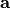 collected into a matrix .
.We additionally introduce the matrix 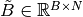 which simply contains copies of the bias vector
in its rows.The mathematical operation described for single samples in eq. (1), is stated for a the case of mini-batches below
(2)¶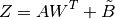
where
 is the output matrix.
is the output matrix.-
static
backward(ctx, grad_Z)[source]¶ Backpropagate the gradients of
 through this linear layer.
through this linear layer.The matrix
grad_Z, which we denote by , contains the partial
derivatives of the scalar loss function with respect to each element
from the
, contains the partial
derivatives of the scalar loss function with respect to each element
from the forward()output matrix.This method backpropagates the global error (encoded in
 ) to all input tensors of the
) to all input tensors of the forward()method, essentially computing ,
,  ,
,
 .
.As shown in the tutorial, these partial derivatives can be computed as follows:

where
 denotes the vector retrieved from the
denotes the vector retrieved from the
 -th row of .
-th row of .- Parameters
ctx – See description of argument
ctxof methodforward().grad_Z – The backpropagated error
.
- Returns
Tuple containing:
grad_A: The derivative of the loss with respect to the input activations, i.e.,
.grad_W: The derivative of the loss with respect to the weight matrix, i.e.,
.grad_b: The derivative of the loss with respect to the bias vector, i.e.,
; or Noneifbwas passed asNoneto theforward()method.
Note
Gradients for input tensors are only computed if their keyword
requires_gradis set toTrue, otherwiseNoneis returned for the corresponding Tensor.- Return type
(tuple)
-
static
forward(ctx, A, W, b=None)[source]¶ Compute the output of a linear layer.
This method implements eq. (2).
- Parameters
ctx – A context. Should be used to store activations which are needed in the backward pass.
A – A mini-batch of input activations
 .
.W – The weight matrix
 .
.b (optional) – The bias vector
.
- Returns
The output activations
as defined by eq.
(2).
-
static
-
class
lib.backprop_functions.MSELossFunction[source]¶ Bases:
torch.autograd.function.FunctionImplementation of a mean-squared-error (MSE) loss.
Assuming a set of input activations in form of a matrix
, where denotes the size of
the mini-batch and  the size of each sample. Additionally, this
the size of each sample. Additionally, this
Functionrequires a set of target activations .
.This method computes
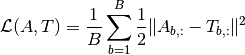
where 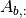 denotes the
-th row of matrix .-
static
backward(ctx, grad_L)[source]¶ Backpropagate gradients through MSE loss.
The input
grad_Lis the derivative of the final
global scalar loss with respect to the scalar output of the
of the final
global scalar loss with respect to the scalar output of the
forward()method. If theforward()is used to compute the final loss from which the backpropagation algorithm starts, then PyTorch will pass the value1for the parametergrad_L.As shown in the tutorial, the partial derivative
can be
computed via
Hence, 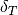 can be computed analoguously.
- Parameters
ctx – See description of argument
ctxof methodLinearFunction.forward().grad_A – The backpropagated error
.
- Returns
Tuple containing:
grad_A: The derivative of the loss with respect to the input activations, i.e.,
.grad_T: The derivative of the loss with respect to the target activations, i.e., .
Note
Gradients for input tensors are only computed if their keyword
requires_gradis set toTrue, otherwiseNoneis returned for the corresponding Tensor.- Return type
(tuple)
-
static
forward(ctx, A, T)[source]¶ Computes the MSE loss between activations
and targets
 :
:  .
.- Parameters
ctx – See description of argument
ctxof methodLinearFunction.forward().A – The input activations, i.e., the matrix
.T –
The target activations, i.e., the matrix
.Note
Normally, targets will be constant values, that we do not wish to backpropagate through (i.e., the keyword
requires_gradwill be set toFalse). For reasons of generality, thisFunctionwill also allow the backpropagation through targets, the keywordrequires_gradof parameterTis set toTrue.
- Returns
A scalar loss value
Ldenoting the computed MSE value.
-
static
-
class
lib.backprop_functions.SigmoidFunction[source]¶ Bases:
torch.autograd.function.FunctionImplementation of a sigmoid non-linearity.
This
Functionapplies a sigmoid function as non-linearity to a vector of activations (e.g., the output of a linear layer
(e.g., the output of a linear layer
LinearFunction).This function (denoted by 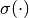) operates element-wise when computing the output activations :
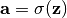
Similarly to the notation used in the docstring of class
LinearFunction, we consider a mini-batch of input activations given as a matrix and denote the corresponding output activations
by .Example
Consider the output activation
 of layer
of layer  .
Assuming a linear layer with sigmoid non-linearity, the output
activations
.
Assuming a linear layer with sigmoid non-linearity, the output
activations  of layer
of layer  are computed as
are computed as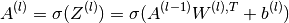
-
static
backward(ctx, grad_A)[source]¶ Backpropagate gradients through sigmoid-nonlinearity.
In this method, we compute the backprop-error
given the
error , which is the derivative of the global scalar
loss with respect to the output of the forward()method.As shown in the tutorial, this partial derivative can be computed as follows:
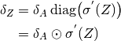
where the function
 applies the derivative of
the sigmoid non-linearity element-wise to its input tensor. The operator
applies the derivative of
the sigmoid non-linearity element-wise to its input tensor. The operator
 denotes the Hadamard product (element-wise product).
denotes the Hadamard product (element-wise product).- Parameters
ctx – See description of argument
ctxof methodLinearFunction.forward().grad_A – The backpropagated error
.
- Returns
The derivative of the loss with respect to the input activations
, i.e., .Note
Gradients for input tensors are only computed if their keyword
requires_gradis set toTrue, otherwiseNoneis returned for the corresponding Tensor.
-
static
forward(ctx, Z)[source]¶ Applies the sigmoid function element-wise to
Z.- Parameters
ctx – See description of argument
ctxof methodLinearFunction.forward().Z – The input activations to this non-linearity, i.e., the matrix
.
- Returns
The output activations
 .
.
-
static
-
lib.backprop_functions.linear_function(A, W, b=None)[source]¶ An alias for using class
LinearFunction.- Parameters
(...) – See docstring of method
LinearFunction.forward().
-
lib.backprop_functions.mse_loss()¶ An alias for using class
MSELossFunction.
-
lib.backprop_functions.sigmoid_function()¶ An alias for using class
SigmoidFunction.
A linear layer module that maintains its own parameters¶
The module lib.linear_layer contains our own implementation of the
PyTorch class torch.nn.Linear. The goal is to utilize the custom
Functions implemented in module lib.backprop_functions (in
particular, the Function lib.backprop_functions.LinearFunction)
and to provide a wrapper that takes care of managing the parameters
( and ) of such a linear layer.
Note
PyTorch its torch.autograd.Function interface is stateless.
Therefore, the wrapper provided in this module is necessary in order to
obtain a convinient interface for linear layers, such that the user doesn’t
have to maintain the parameters manually.
|
Wrapper for |
-
class
lib.linear_layer.LinearLayer(in_features, out_features, bias=True)[source]¶ Bases:
torch.nn.modules.module.ModuleWrapper for
Functionlib.backprop_functions.LinearFunction.The interface is inspired by the implementation of class
torch.nn.Linear.-
weights¶ The weight matrix
of the layer.- Type
-
bias¶ The bias vector
of the
layer. Attribute is Noneif argumentbiaswas passed asNonein the constructor.- Type
- Parameters
-
property
bias Getter for read-only attribute
bias.
-
forward(x)[source]¶ Compute the output activation of a linear layer.
This method simply applies the
lib.backprop_functions.LinearFunctionFunctionusing the internally maintained weights.- Parameters
x – See description of argument
Aof methodlib.backprop_functions.LinearFunction.forward().- Returns
See return value of method
lib.backprop_functions.LinearFunction.forward().
-
property
weights Getter for read-only attribute
weights.
-
Implementation of a Multi-layer Perceptron (MLP)¶
The module lib.mlp implements a simple fully-connected neural network,
a so called multi-layer perceptron (MLP).
Internally, it will make use of Functions implemented in module
lib.backprop_functions to realize fully-connected linear layers and
sigmoid activation functions.
|
Implementation of a fully-connected neural network with sigmoid non- linearities as activation functions after all hidden layers. |
-
class
lib.mlp.MLP(n_in=1, n_out=1, n_hidden=[10])[source]¶ Bases:
torch.nn.modules.module.ModuleImplementation of a fully-connected neural network with sigmoid non- linearities as activation functions after all hidden layers.
- Parameters
-
property
depth Getter for read-only attribute
depth.
-
forward(x)[source]¶ Compute the output
 of the network.
of the network.After every linear hidden layer a sigmoid nonlinearity will be applied.
Note
The output of the network will be linear, i.e., no activation function is applied to the linear layer that connects the last hidden layer with the output layer.
- Parameters
x – The input to the network.
- Returns
The output
yof the network.
A collection of helper functions¶
The module lib.utils contains several general purpose utilities and
helper functions.
|
Generate a dataset for a 1D regression task with a cubic polynomial. |
Generate data for a regression task through a teacher model. |
|
|
A simple regression dataset. |
|
Plot the predictions of 1D regression tasks. |
-
class
lib.utils.RegressionDataset(inputs, outputs)[source]¶ Bases:
torch.utils.data.dataset.DatasetA simple regression dataset.
- Parameters
inputs (numpy.ndarray) – The input samples.
outputs (numpy.ndarray) – The output samples.
-
lib.utils.generate_data_from_teacher(num_train=1000, num_test=100, n_in=5, n_out=5, n_hidden=[10, 10, 10])[source]¶ Generate data for a regression task through a teacher model.
This function generates random input patterns and creates a random MLP (fully-connected neural network), that is used as a teacher model. I.e., the generated input data is fed through the teacher model to produce target outputs. The so produced dataset can be used to train and assess a student model. Hence, a learning procedure can be verified by validating its capability of training a student network to mimic a given teacher network.
Input samples will be uniformly drawn from a unit cube.
Warning
Since this is a synthetic dataset that uses random number generators, the generated dataset depends on externally configured random seeds (and in case of GPU computation, it also depends on whether CUDA operations are performed in a derterministic mode).
- Parameters
num_train (int) – Number of training samples.
num_test (int) – Number of test samples.
n_in (int) – Passed as argument
n_into classlib.mlp.MLPwhen building the teacher model.n_out (int) – Passed as argument
n_outto classlib.mlp.MLPwhen building the teacher model.n_hidden (list) – Passed as argument
n_hiddento classlib.mlp.MLPwhen building the teacher model.
- Returns
See return values of function
regression_cubic_poly().
-
lib.utils.plot_predictions(device, test_loader, net)[source]¶ Plot the predictions of 1D regression tasks.
- Parameters
(...) – See docstring of function
main.test().
-
lib.utils.regression_cubic_poly(num_train=20, num_test=100, train_domain=(-4, -4), test_domain=(-4, 4), rseed=42)[source]¶ Generate a dataset for a 1D regression task with a cubic polynomial.
The regression task modelled here is 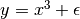, where
 .
.- Parameters
num_train (int) – Number of training samples.
num_test (int) – Number of test samples.
train_domain (tuple) – Input domain for training samples.
test_domain (tuple) – Input domain for training samples.
rseed (int) – To ensure reproducibility, the random seed for the data generation should be decoupled from the random seed of the simulation. Therefore, a new
numpy.random.RandomStateis created for the purpose of generating the data.
- Returns
Tuple containing:
train_x: Generated training inputs.
test_x: Generated test inputs.
train_y: Generated training outputs.
test_y: Generated test outputs.
Data is returned in form of 2D arrays of class
numpy.ndarray.- Return type
(tuple)